(Página em construção!)
O QUARITO Ronald Nicolau, junto
ao grupo de alunos e professores do Col. Est. Rocha Pombo batizado de
Grupo Nhundiaquara, correu parte do Paraná, na função de diretor, com
a peça ecológica "O Quarito" de autoria do artista Constantino Stopinski. 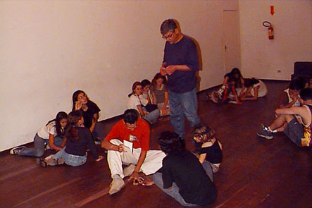 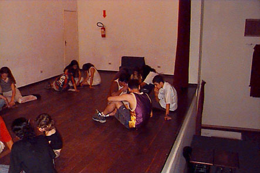 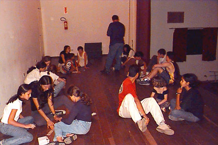 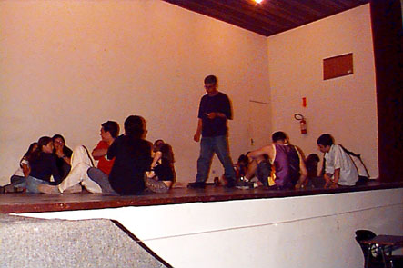 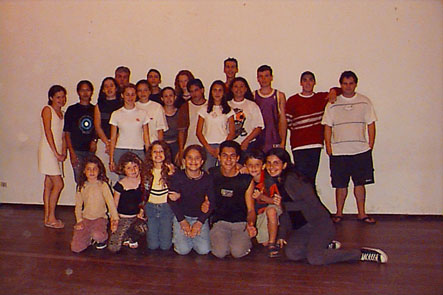 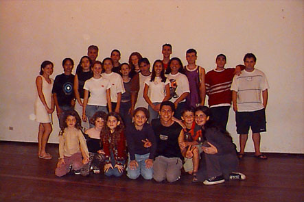
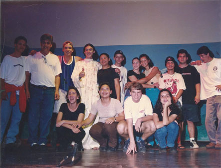 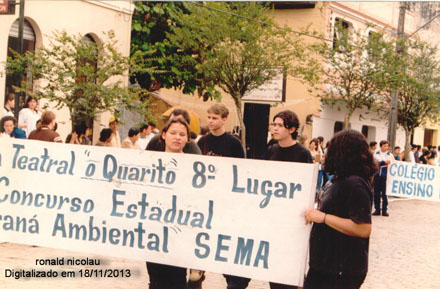 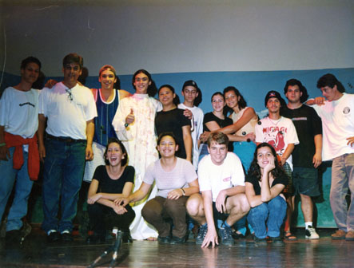 Artes feitas com o aplicativo Paint Brush do Windows. 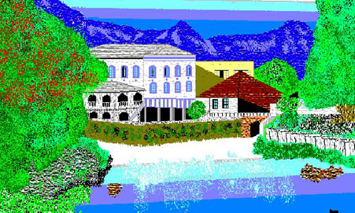 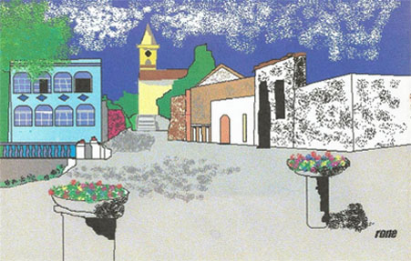 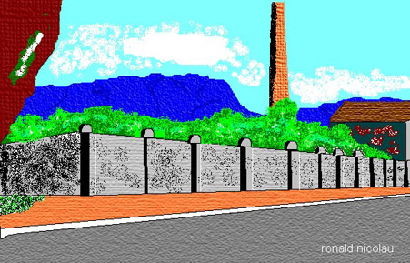 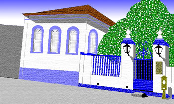 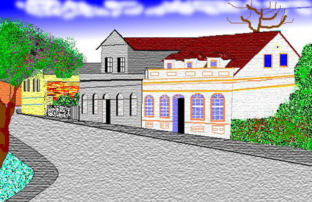 (O texto do recorte de jonal abaixo, é o mesmo texto da página Personagens.) 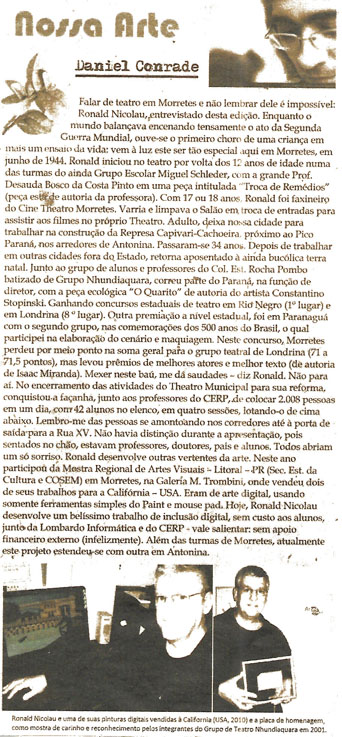 Segue abaixo mais três reportagens. 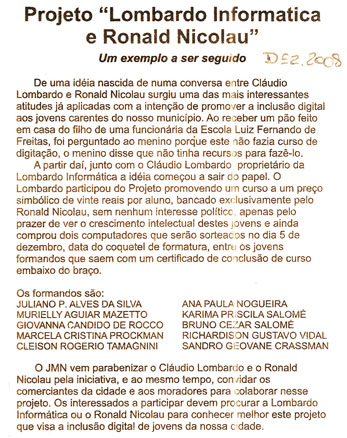 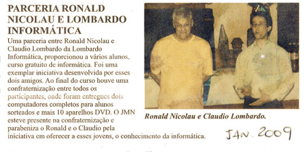 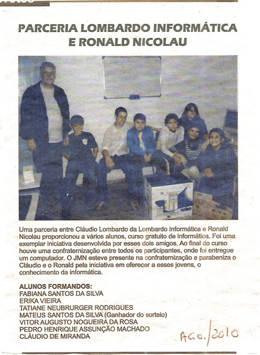 |